| 日付 | 2021年12月29日（水） |
|---|---|
| 山域 | 道志山塊 |
| メンバー | 家族（妻、長女・10歳、長男・8歳） |
| 山行形態 | 子連れ日帰り |
| アクセス | 車 |
| ルート (Map) | 藤野駅前駐車場 (7:58) - (8:33) 日連アルプス登山口 - (9:14) 日連山 - (9:32) 杉峠 - (10:03) 鉢岡山 - (10:26) 杉峠 - (10:45) 八坂山 - (10:49) 峯 (11:40) - (11:45) 金剛山 - (12:07) 金剛山神社参道口 - (12:34) 藤野駅前駐車場 |
近場の山に行きたいとリクエストがあり、日連アルプスに行くことにする。
2021年の登り納めだ。
藤野駅近くの有料駐車場に車を停める。標高210m。
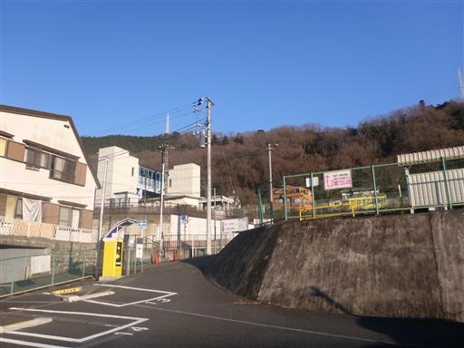
車道を歩いて登山口を目指す。道が狭くて、車が通ると歩きにくい。
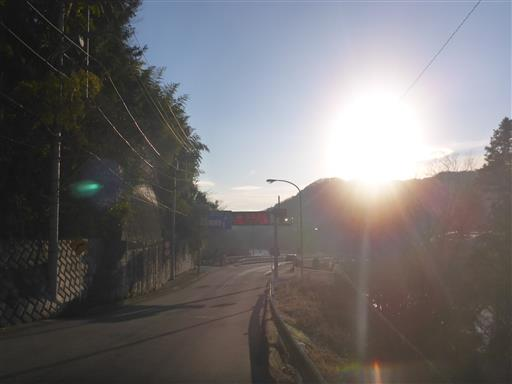
日連大橋を渡る。
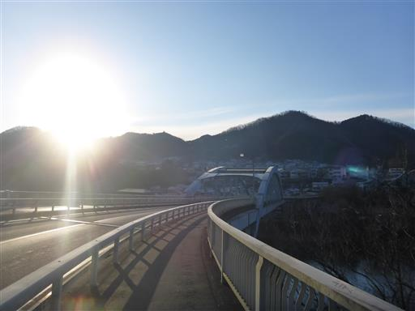
眼下に見えるのは相模川。
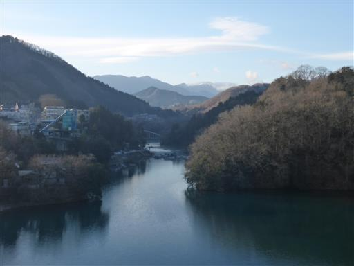
周囲は霜で真っ白。とにかく寒い。
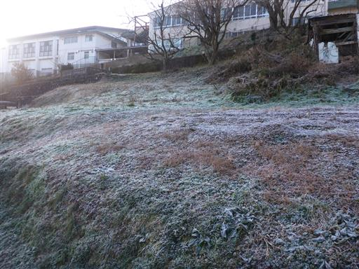
相模川の向こう側に低い山々が連なる。本日は快晴だ。
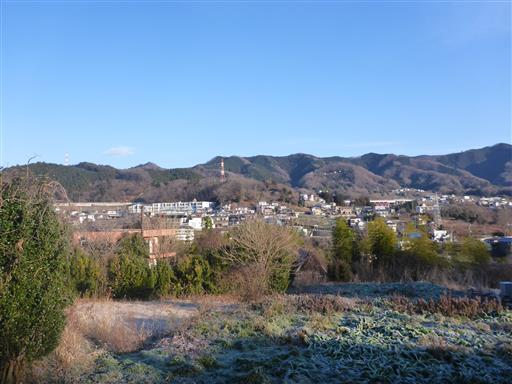
古そうな遊具のある公園を通過。
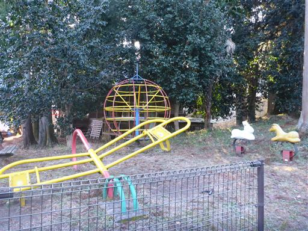
30分歩いて登山口に到着する。
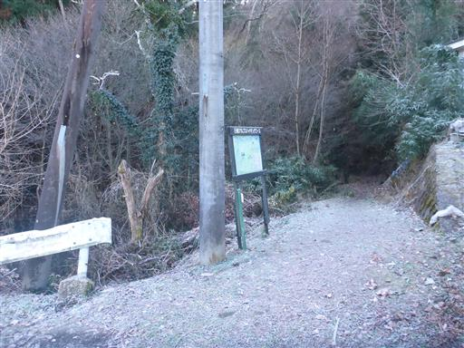
地面の水は凍りついている。
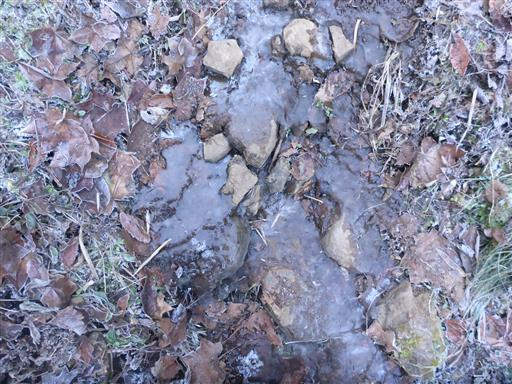
ようやく日差しが出てきた。北側斜面なのでなかなか陽が当たらない。
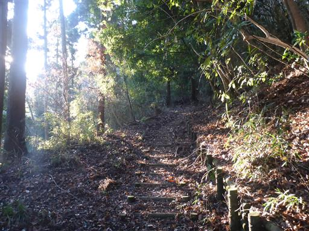
緩やかな道だったが、突然急斜面になってロープが現れる。
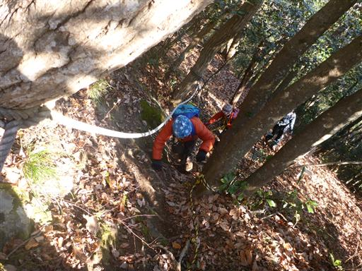
そこから先は再び緩やかな尾根道。
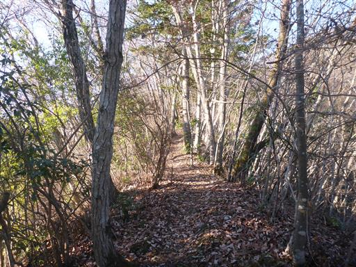
宝山山頂に到着。
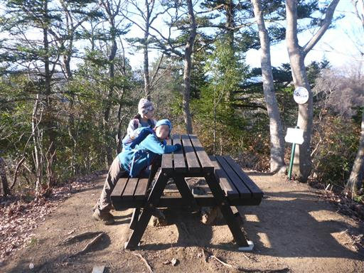
⑧と記載されている。逆回りで登るのが正しいようだ。
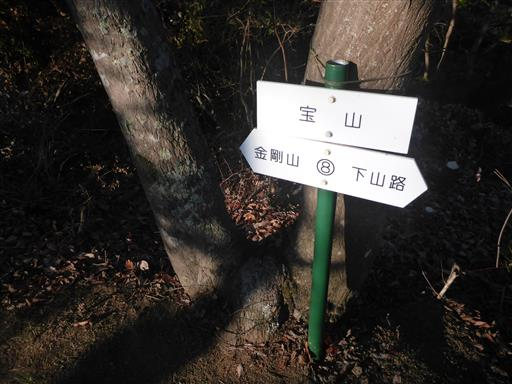
明るい尾根道が続く。
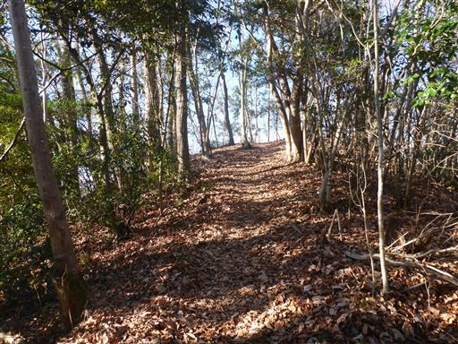
あっという間に2つ目のピークの日連山に到着する。標高374m。
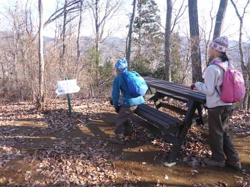
再び明るい尾根道。
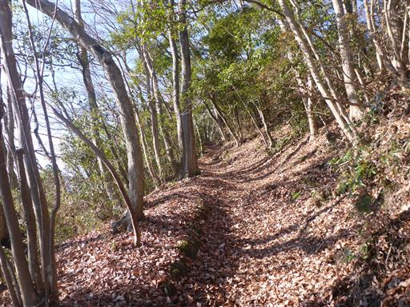
杉峠に到着。
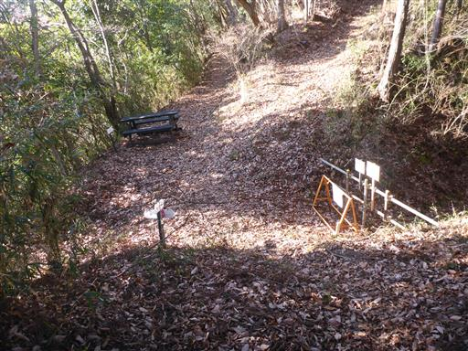
小さな祠が祀られている。
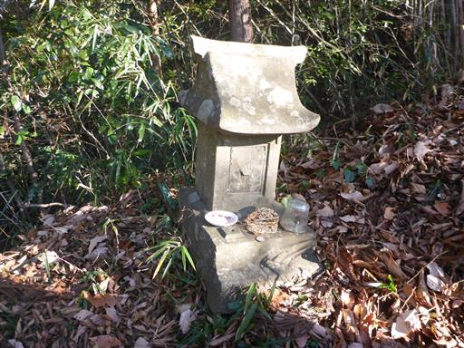
ここから少し足を延ばして、鉢岡山を往復することにする。

しばらく歩くと車道に出てくる。
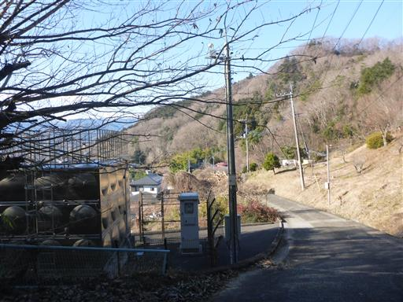
ここからは、少しだけ周囲の景色が見渡せる。
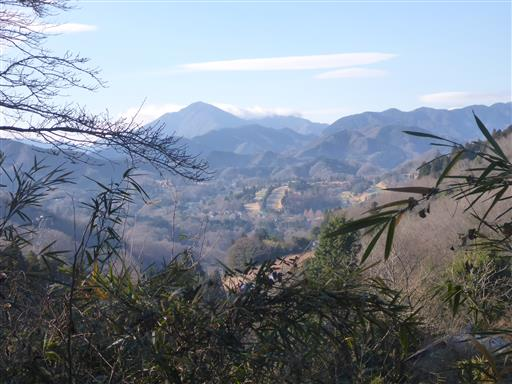
目の前に突然、展望台らしきものが現れる。
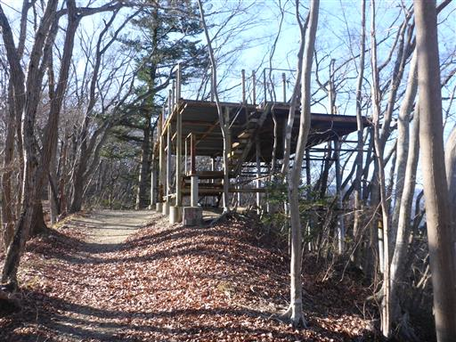
かなり古いもので管理もされていなさそうなので、崩れ落ちないかと不安だが、
恐る恐る登ってみる。
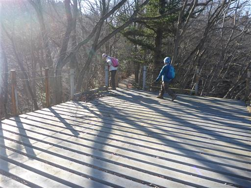
登ってみても大して展望は広がらない。怖いのでさっさと下りる。
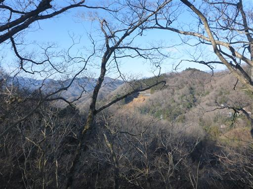
その先に、打ち捨てられた車を発見。
どうやってここまでたどり着いたのか、謎だ。
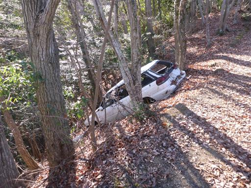
鉢岡山に到着する。標高460m。
本日登る山々の最高峰だ。
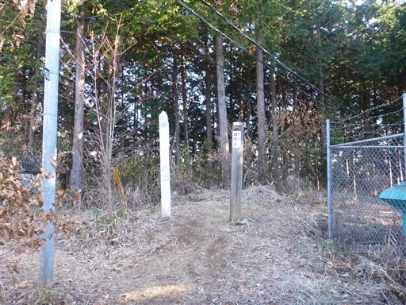
電波塔に占拠されていて、展望も広がらない無粋な山頂だ。
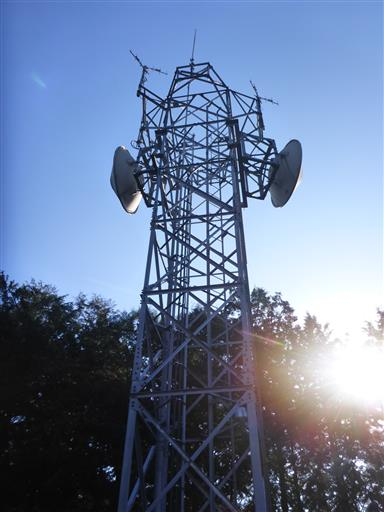
杉峠まで引き返したら、金剛山に向かう。
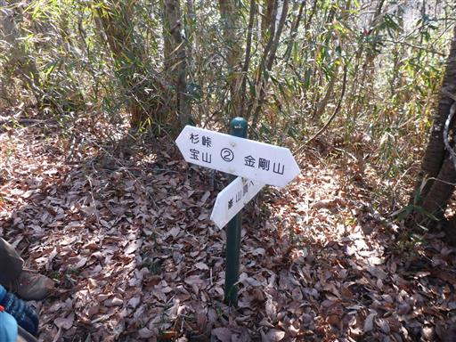
峯山頂に到着。展望が良い場所だが、その先の八坂山に寄り道する。
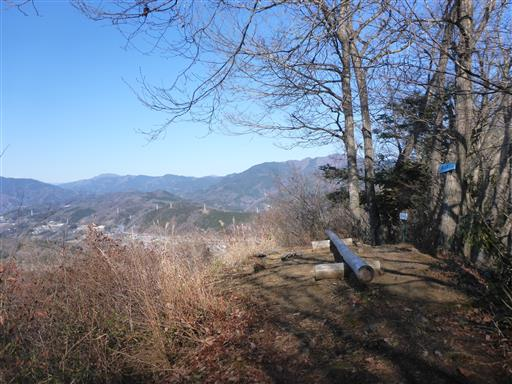
八坂山に到着。展望が全くない地味なピークで、すぐに引き返す。
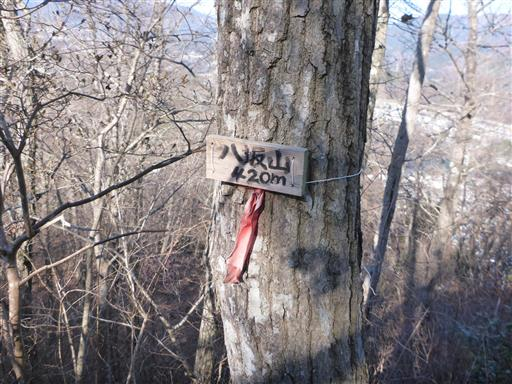
峯山頂に戻ってくる。ここが一番展望が良さそうなので、ここで昼食休憩をとる。
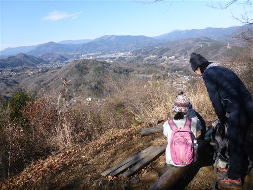
ここからは中央線沿線の山々が見渡せる。
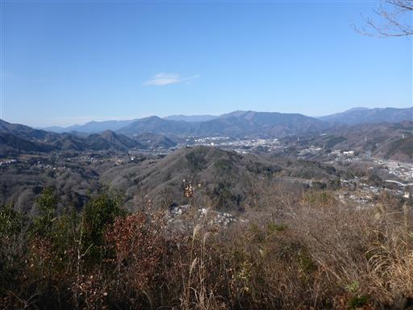
昼食をとって出発したら、すぐに本日最後のピークの金剛山に到着する。
山頂には金剛山神社が祀られている。
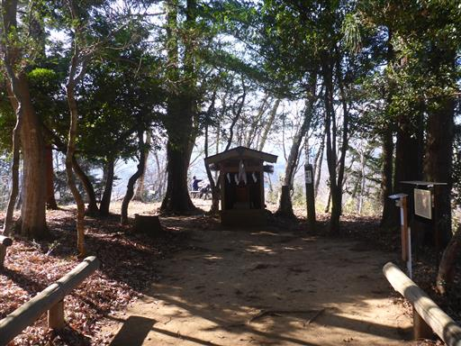
下山道はかなりの急斜面で歩きにくい。眼下に相模川が見える。
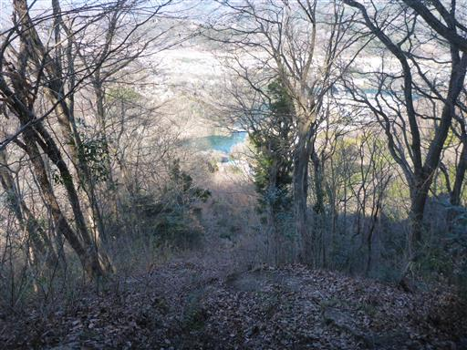
登山口まで下りてくる。金剛山神社の赤い鳥居がある。
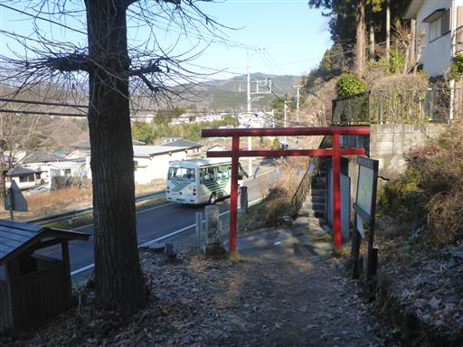
再び車道を歩いて駐車場に戻る。
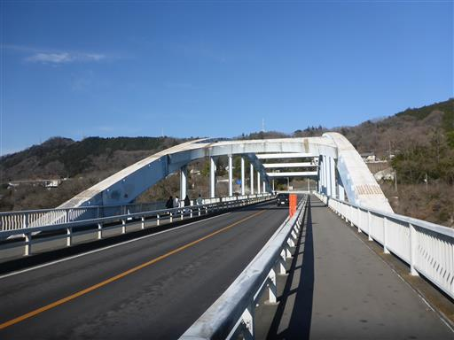
相模川にはボートが浮かんでいる。
釣りをしているのか、ボートに乗っている人もチラホラ見られる。
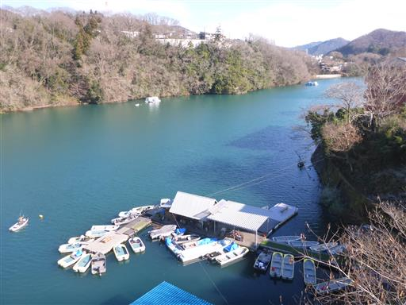
駐車場に戻ってくる。
特徴の乏しい地味な山々だったが、家から近く、手軽に登れるハイキングだった。
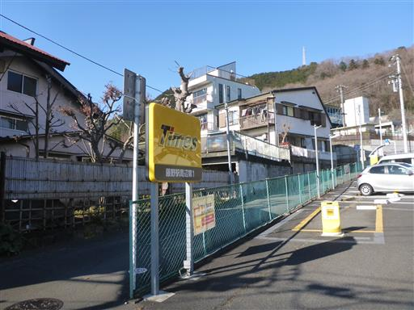